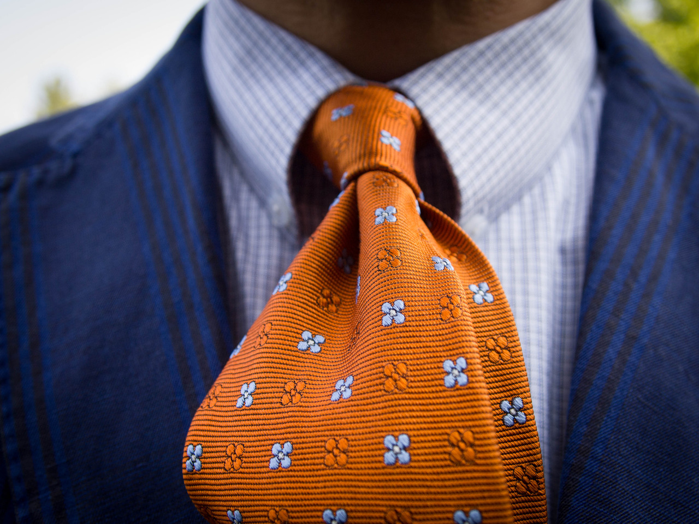

Arta de a asorta costumele și cămășile este un lucru care i-a pus în dificultate pe cei mai buni oameni ai modei pentru mulți ani de zile.
Am crescut urmărind diferite sporturi și filme. Am jucat baschet și băteam mingea pe terenul de fotbal zi de zi, dar niciodată nu am învățat despre teoria culorilor sau despre ce tip de haine se potrivesc cu anumite articole vestimentare. Nu am avut nicio idee. Nici nu părea să ne pese.
Evoluția în potențialul nostru cel mai înalt ca gentleman necesită o atenție fină la detalii.
În crearea acestui articol am folosit 3 pași principali pe care trebuie să îi urmărim atunci când dorim să asortăm cravata cu costumul sau cămașa.
1. Teoria culorilor
2. Îmbinarea modelelor
3. Considerații tonale
Teoria culorilor: potrivirea culorii cravatei cu cea a costumului sau a cămășii
Primul pas în asortarea cravatei este culoarea. Culoarea poate părea prea puțin importantă pentru mulți dintre noi. Așadar, vă prezentăm roata de culori. Aceasta ne ajută să înțelegem mai ușor culorile care se împart în două mari categorii: culori calde și reci.
Culorile calde expun vibrații, cum ar fi roșu, portocaliu sau galben. Culorile reci sunt reprezentate de culori precum albastru, verde sau mov. Roata de culori ne ajută să armonizăm culorile, armonizarea fiind conceptul prin care se creează un aspect echilibrat.
Așa cum vom vedea mai jos, armonia culorilor ideală se realizează atunci când avem o culoare caldă împotriva uneia reci, creându-se astfel un contrast vizual plăcut pe care toți ni-l dorim atunci când dorim să purtăm noul costum.
Așa cum am menționat mai sus, roata de culori împarte culorile în două categorii, calde și reci. Folosind o roată de culoare, putem crea scheme de culori care ne vor ajuta să realizăm un concept important de armonie. Mai jos este o listă a principalelor scheme de culori.
Schema de culori monocromatică
Acesta este cel mai simplu mod de a începe să experimentați culoarea și de asemenea cea mai conservatoare schemă de culori. O schemă de culoare monocromatică potrivește variantele mai întunecate de culori cu cele mai aprinse(de exemplu o cravată navi cu o cămașă albastru deschis). Această schemă te va ajuta să arătați elegant și sofisticat, fără a te scoate neapărat din zona ta de confort.
Schema de culori analogică
Folosirea unei scheme de culori analogice este mai îndrăzneață decât cea prezentată anterior. Această tehnică implică alegerea de culori adiacente din roata de culori. Chiar dacă această schemă presupune să nu introduceți încă armonie, ea este un element fin sofisticat.
Un exemplu ar fi purtarea unei cravate mov cu o cămașă albastră. Schemele de culoare analogice sunt plăcute și liniștitoare pentru ochi, prin urmare, pot fi utilizate la locul de muncă sau în mai multe împrejurări sociale.
Schema de culori triadică
Sistemul de culori triadic implică alegerea culorilor care formează un triunghi de-a lungul roții de culoare. Astfel, avem acum o schemă de culori care implică armonie (creând un echilibru între culorile calde și reci). Prin urmare, schemele de culori triadice sunt albastru, roșu și galben sau verde, portocaliu și purpuriu. În timp ce ambele scheme de culori implică atât culori calde, cât și reci, contrastul nu este la fel de puternic ca în cazul unei scheme complementare de culori. Această schemă de culori atractivă este o modalitate excelentă de a introduce culoarea în garderoba ta.
Culorile triadice au fost cu siguranță încercate de mulți dintre voi. Acesta este motivul pentru care o pereche de blugi albastră arată minunat alături de un tricou roșu sau galben. O schemă de culori triadică este o una extrem de profesională, dar versatilă și poate fi utilizată la locul de muncă, în medii profesionale cum ar fi întâlniri sau prezentări și pentru evenimente sociale formale, cum ar fi o nuntă.
Culori complementare
Acestea sunt culorile cele mai izbitoare de contrast și sunt opuse în schema de culori. Prin urmare, culoarea aflată în contrast cu albastru este cea portocalie, culoarea complementară celei rosii este verde, iar culoarea complementară celei galbene este violet. Este important că aceste culori formează contrastul cel mai puternic.
Culorile complementare se potrivesc evenimentolor sociale deoarece îndrăzneala lor poate părea neadecvată la locul de muncă sau în anumite întâlniri profesionale.

Îmbinarea modelelor: potrivirea modelului cravatei cu cel al cravatei sau costumului
Similar culorilor, doriți ca modelul cravatei să fie în contrast cu cămașa și costumul pe care îl purtați. Ca regulă principlă, evitați amestecarea a trei tipuri de modele diferite.
Contrar cu ceea ce majoritatea dintre noi credeam, pentru ca modelele să se îmbine perfect și să aibă un aspect vizual plăcut, ele nu trebuie să fie neapărat diferite.
Deși pot fi și modele diferite, ele pot fi și similare dar în proporții diferite. Este esențial ca proporția modelului să varieze, indiferent dacă acestea sunt identice sau nu.
Dacă proporțiile de model sunt foarte apropiate, ținuta va arăta prea aglomerată și se va îndepărta de scopul pe care dorești să îl atingi.
1. Alege un model din aceeași gamă dar diferit în proporție
Dacă purtați un costum gri colorat cu o cămașă albastră dungată, o cravată mai dungată, folosind teoria culorii descrisă mai sus, aceasta va funcționa foarte bine.
2. Alege un model care este total diferit
În loc să folosiți o cravată cu dungi mai rare, puteți opta pentru una cu buline sau flori. Din nou, așa cum este cazul de mai sus, proporția modelului are o mare importanță, chiar și atunci când cele două modele sunt complet diferite.
3. Îmbinarea unei cămăși cu model alături de o cravată într-o singură culoare
Ca o alternativă la cele două metode de potrivire a modelelor de cravată prezentate mai sus, ați putea alege să nu contrastați modelul cămășii cu alt model și, în schimb, să îl contrastați cu o cravată solidă.
Considerații tonale: pentru potrivirea modelului cravatei
Acum, că am acoperit teoria culorilor și considerentele de model, putem acorda atenție în cele din urmă problemelor tonale. Considerațiile tonale se referă la modul în care îmbinarea cravatei cu cămașa sunt ca articole de îmbrăcăminte de sine stătătoare.
O cămașă cu contrast scăzut se referă la o cămașă care pare mai simplă în aparență. Aceste cămăși sunt concepute preponderent cu o culoare majoră și o culoare minoră, culoarea minoră fiind de o valoare neglijabilă și, prin urmare, nu se poate distinge de culoarea majoră.
Cu toate acestea, o cămașă de acest gen va apărea din depărtare că are o singură culoare, dar, după o inspecție mai atentă, va prezenta mai mult de o culoare sau un design subtil, cum ar fi dungi slabe. Ceea ce creează, atunci când este asociată cu o cravată tonală mai mare, este contrastul vizual.